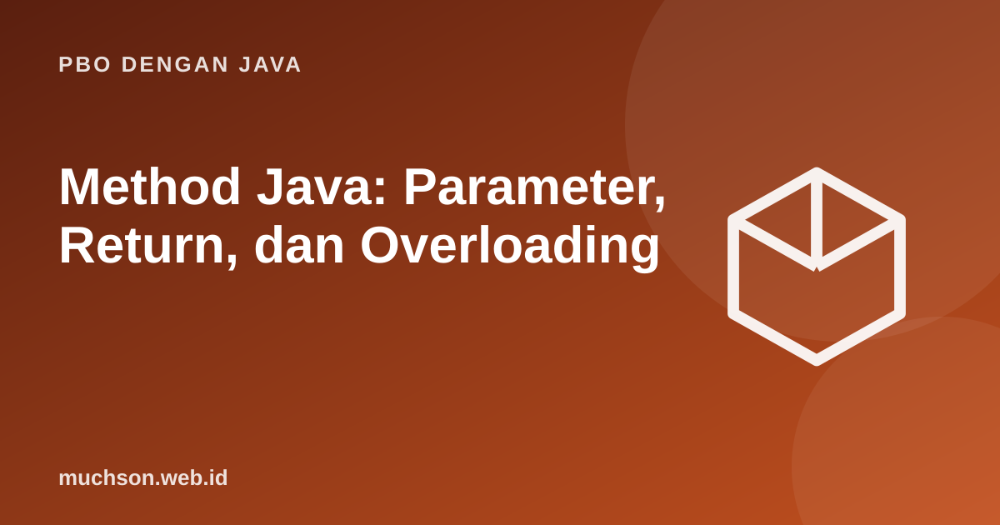

Beranda › Artikel › PBO dengan Java
PBO dengan JavaMethod Java: Parameter, Return, dan Overloading
Method adalah blok kode bernama yang dapat dipanggil berulang. Ia memecah program menjadi bagian kecil yang bisa dipahami dan diuji sendiri. Satu hal yang sering membingungkan pemula: Java selalu mengirim argumen dengan pass-by-value, bahkan untuk objek.
Sebaiknya sudah paham: kontrol alur Java, array

Tujuan belajar
Setelah membaca dan mencoba materi ini, Anda mampu:
- mendefinisikan dan memanggil method dengan parameter dan nilai balik
- memakai overloading dan varargs
- menjelaskan pass-by-value pada primitif dan referensi
- membedakan method static dan instance
- menulis method rekursif sederhana
Anatomi method
public class Main {
// [modifier] [static] tipeKembali namaMethod(parameter)
static int luasPersegiPanjang(int panjang, int lebar) {
return panjang * lebar;
}
static void sapa(String nama) { // void: tidak mengembalikan nilai
System.out.println("Halo, " + nama);
}
static boolean genap(int n) {
return n % 2 == 0;
}
public static void main(String[] args) {
sapa("Ani");
System.out.println(luasPersegiPanjang(4, 5));
System.out.println(genap(7) + " " + genap(10));
}
}Halo, Ani
20
false true
Overloading dan varargs
public class Main {
static int jumlah(int a, int b) { return a + b; }
static double jumlah(double a, double b) { return a + b; }
static int jumlah(int a, int b, int c) { return a + b + c; }
static int total(int... angka) { // varargs: jumlah argumen bebas
int t = 0;
for (int x : angka) t += x;
return t;
}
public static void main(String[] args) {
System.out.println(jumlah(1, 2)); // memilih versi int, int
System.out.println(jumlah(1.5, 2.5)); // double, double
System.out.println(jumlah(1, 2, 3));
System.out.println(total() + " " + total(5) + " " + total(1, 2, 3, 4));
}
}3
4.0
6
0 5 10
Java selalu pass-by-value
Saat memanggil method, Java menyalin nilai argumen ke parameter. Untuk primitif, yang disalin adalah angkanya. Untuk objek, yang disalin adalah nilai referensinya (alamat), sehingga method dapat mengubah isi objek tetapi tidak dapat membuat variabel pemanggil menunjuk objek lain.
import java.util.Arrays;
public class Main {
static void ubahInt(int x) { x = 100; } // hanya mengubah salinan
static void ubahIsi(int[] a) { a[0] = 100; } // mengubah objek yang ditunjuk
static void gantiRujukan(int[] a) { a = new int[]{7, 7, 7}; } // hanya mengubah salinan referensi
public static void main(String[] args) {
int n = 5;
ubahInt(n);
System.out.println("n = " + n);
int[] data = {1, 2, 3};
ubahIsi(data);
System.out.println(Arrays.toString(data));
gantiRujukan(data);
System.out.println(Arrays.toString(data)); // tidak berubah menjadi [7, 7, 7]
}
}n = 5
[100, 2, 3]
[100, 2, 3]
static vs instance
| Jenis | Dimiliki oleh | Dipanggil dengan | Dapat memakai atribut instance? |
|---|---|---|---|
| static | Class | NamaClass.method() | Tidak (tanpa objek) |
| instance | Objek | objek.method() | Ya |
Rekursi
public class Main {
static long faktorial(int n) {
if (n <= 1) return 1; // kasus dasar
return n * faktorial(n - 1); // langkah rekursif
}
static int fib(int n) { return n < 2 ? n : fib(n - 1) + fib(n - 2); }
public static void main(String[] args) {
System.out.println(faktorial(5) + " " + faktorial(20));
System.out.println(fib(10));
try { faktorial(-1); faktorial(100000); }
catch (StackOverflowError e) { System.out.println("StackOverflowError"); }
}
}120 2432902008176640000
55
StackOverflowError
Latihan mandiriCoba kerjakan dulu sebelum membuka jawaban.
1. Tulis method yang menukar dua nilai int pada array [a, b] di indeks i dan j.
Pakai variabel sementara: t = a[i]; a[i] = a[j]; a[j] = t.
2. Tulis method rata-rata dengan varargs.
static double rata(double... x) yang menjumlahkan lalu membagi x.length (waspadai x.length = 0).3. Mengapa tidak bisa membuat method swap(int a, int b) yang berhasil menukar variabel pemanggil?
Karena yang dikirim adalah salinan nilai; perubahan pada parameter tidak memengaruhi variabel asal.
4. Tulis method rekursif untuk menghitung jumlah digit bilangan.
n < 10 ? n : n % 10 + jumlahDigit(n / 10)Ringkasan
- Method memecah program menjadi bagian bernama yang dapat dipakai ulang.
- Overloading: nama sama, parameter berbeda; varargs menerima banyak argumen.
- Java selalu pass-by-value; untuk objek, yang disalin adalah referensinya.
- Rekursi memerlukan kasus dasar dan memakai stack.
Tanya jawab
Apakah Java memiliki pass-by-reference?
Tidak. Kebingungan muncul karena salinan referensi tetap menunjuk objek yang sama sehingga isinya bisa diubah.
Mengapa overloading tidak bisa berbeda hanya pada tipe kembalian?
Kompiler memilih method dari argumen pemanggilan; nilai kembalian tidak ikut menentukan.
Berapa banyak parameter yang disarankan?
Semakin sedikit semakin baik; lebih dari tiga atau empat menandakan perlu pengelompokan ke objek.
Referensi
- Oracle: Defining Methods
- Oracle: Passing Information to a Method
- The Java Language Specification
- Sedgewick dan Wayne, Introduction to Programming in Java